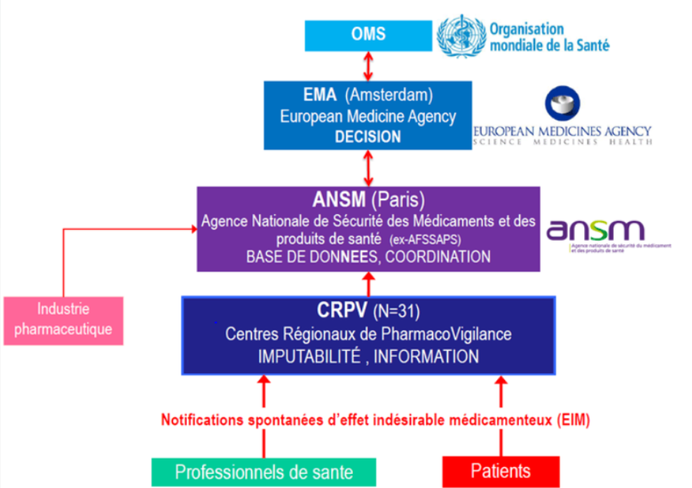

Iatrogénie Médicamenteuse
Table of Contents
1. Phase IV
La phase IV est la réévaluation de la sécurité et de l'efficacité d'un médicament après sa commercialisation.
2. Pharmacovigilance
2.1. Médicaments Concernés
- AMM
- ATU
- MDS
- Homéopatie
2.2. A Qui Déclarer?
- CRPV 3
- Industrie pharmaceutique (facultative)
